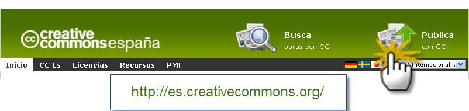
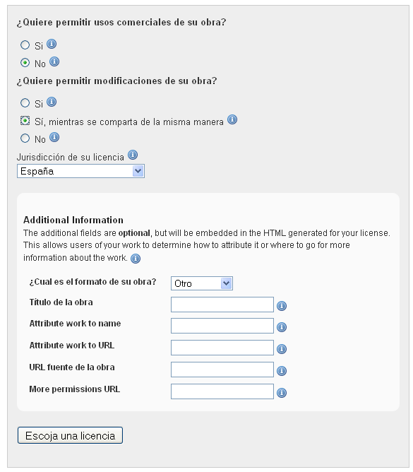
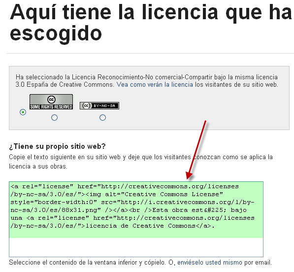

Si creas un contenido o un recurso educativo y lo publicas en la Web, la ley de propiedad intelectual reconoce tus derechos de autor aunque no lo menciones expresamente. Es decir, que tu trabajo tiene "todos los derechos reservados", pero si quieres que tu trabajo sea utilizado por otros profesores bajo ciertas condiciones, "algunos derechos reservados", entonces tienes que elegir una de las seis licencia CC que existen y publicar tu trabajo bajo esa licencia.
Para escoger una licencia para tu trabajo, hay que ir al sitio web de Creative Commons España (http://es.creativecommons.org/) y hacer clic en Publica con CC.


Esta es la licencia que se ha elegido, Creative Commons nos proporciona el texto HTML para incluir en nuestro sitio web.

El texto HTML, una vez incluido en un sitio web, se ve así:

Esta obra está bajo una licencia de Creative Commons.
Tomado de los cursos en línea de la Consejería de Educación de la Comunidad de Madrid. elaborado originalmente por: